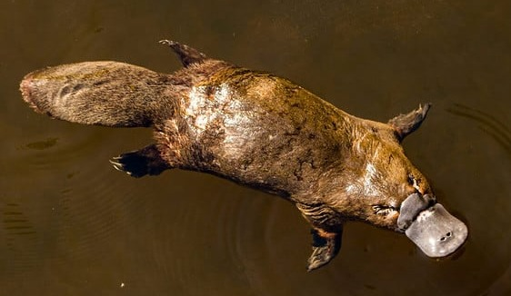

Best AI Website Maker
Pattedyr føder levende unger, på nær en lille gruppe som vi kalder kloakdyr. Kloakdyrene har bevaret nogle ting fra krybdyrene, fx lægger de æg. Næbdyret på billedet høre til kloakdyrene.
Pattedyrene opstod for ca. 225 millioner år siden. I de første 160 millioner år var de små, nataktive dyr. Det var først efter dinosaurernes uddøen for 66 millioner år siden, at pattedyrene ekspanderede til de mange former vi kender i dag.
De første pattedyr levede i dinosaurernes skygge og var tvunget til at klare sig i en niche, de store dinosaurer ikke besatte: nattens mørke. Nataktivt liv kræver god isolation (pels), konstant kropstemperatur og skarpe sanser. Alle disse træk er udgangspunktet for pattedyrenes succes.
Mælk er evolutionært meget kostbart for moderen, men giver ungerne en ekstraordinær start på livet. Mælken er tilpasset artens behov og indeholder ikke kun næring, men også antistoffer, der beskytter den unge mod infektioner. Resultatet er, at pattedyrsunger trods at blive født hjælpeløse vokser meget hurtigt og har høj overlevelse.
Det store hjerne muliggør kompleks adfærd, læring og socialt liv. Det er grunden til, at pattedyrene – og særligt primaterne – udviklede evner til redskabsbrug, sprog og civilisation. Evolutionen af hjernen er måske det mest vidtrækkende af alle hvirveldyrenes tilpasninger.
Varmblodede dyr har brug for isolering, så de få pattedyr der ikke har pels, har normalt et kraftigt fedtlag til at isolere med i stedet. Derfor skød man i gamle dage hvaler udelukkende for at bruge deres fedt til olielamper.
Hår/pels: Isolerer kroppen og hjælper med at opretholde konstant kropstemperatur.
Varmblodede: Ligesom fuglene opretholdes en konstant høj kropstemperatur indefra.
Mælk: Hunner producerer mælk til at ernære ungerne – ekstremt energirigt og tilpasset til ungens behov.
Forskellige tænder: Fortænder, hjørnetænder, præmolarer og kindtænder har hver deres funktion.
Levende unger (de fleste): De fleste pattedyr føder unger fremfor at lægge æg.
Stort hjerne/kropsforhold: Pattedyr har generelt et større og mere komplekst hjerne end andre hvirveldyr.
Best AI Website Maker